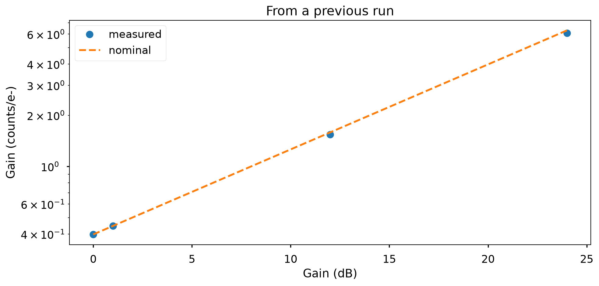

2026-11-24
basler_live.py: Read noise tab
| Gain | Bias (counts) | Read noise (counts) |
|---|---|---|
| 0 dB | 127.4 | 0.86 |
| 1 dB | 126.4 | 0.93 |
| 12 dB | 127.8 | 2.44 |
| 24 dB | 126.2 | 7.92 |
basler_live.py: Dark counts tab
| Gain | Bias (counts) | Dark counts (counts/pixel/s) |
|---|---|---|
| 0 dB | 127.4 | 0.44 |
| 1 dB | 126.4 | 0.50 |
| 12 dB | 127.8 | 1.79 |
| 24 dB | 126.5 | 7.19 |
\[ \mathrm{Dynamic\ Range} = \frac{(\mathrm{Saturation} - \mathrm{Dark\ Count})}{\mathrm{Read\ Noise}} \]
| Gain | Dynamic range | Dynamic range (dB) |
|---|---|---|
| 0 dB | 4588:1 | 73.2 |
| 1 dB | 4266:1 | 72.6 |
| 12 dB | 1625:1 | 64.2 |
| 24 dB | 501:1 | 54.0 |
\[ \lambda = \sigma^2 \]
\[ \lambda = \mathbb{E}[x] = \mathrm{var}(x) = \mathbb{E}[(x - \mathbb{E}[x])^2] \]
As the average number of photons increases (e.g. the light intesnity) so does the variability
Why do we have the intuition that images become “less noisy” at higher intensities?
SNR is propotional to the standard deviation not the variance
\[ SNR = \frac{\lambda}{\sigma} = \frac{\lambda}{\sqrt{\lambda}} = \sqrt{\lambda} \]
Why can’t we see the Milky Way from London?
\[ \begin{aligned} \sigma_{total}^2 &= \sigma_{signal}^2 + \sigma_{noise}^2 \\ &= \lambda_{signal} + \lambda_{noise} \end{aligned} \]
\[ \begin{aligned} SNR &= \frac{\lambda_{signal}}{\sigma_{total}} \\ &= \frac{\lambda_{signal}}{\sqrt{(\lambda_{signal} + \lambda_{noise})}} \end{aligned} \]
\[ c = \alpha p \]
\[ \mathbb{E}[x + y] = \mathbb{E}[x] + \mathbb{E}[y] \]
\[ \mathbb{E}[\alpha x] = \alpha \mathbb{E}[x] \]
\[ \mathrm{var}(x) = \mathbb{E}[(x - \mathbb{E}[x])^2] = \mathbb{E}[x^2] - (\mathbb{E}[x])^2 \]
\[ \begin{aligned} c &= \alpha p \\ \mathrm{var}(c) &= \mathbb{E}[(c - \mathbb{E}[c])^2] \\ &= \mathbb{E}[(\alpha p - \mathbb{E}[\alpha p])^2] \\ &= \mathbb{E}[(\alpha (p - \mathbb{E}[p]))^2] \\ &= \alpha^2 \mathbb{E}[(p - \mathbb{E}[p])^2] \\ &= \alpha^2 \mathrm{var}(p) \\ &= \alpha^2 \mathbb{E}[p] \\ &= \alpha^2 \mathbb{E}[\frac{c}{\alpha}] \\ &= \alpha \mathbb{E}[c] \end{aligned} \]
\[ c = \alpha p + \epsilon \]
\[ \begin{aligned} \mathrm{var}(c) &= \mathbb{E}[(\alpha p + \epsilon - \mathbb{E}[\alpha p + \epsilon])^2] \\ &= \mathbb{E}[(\alpha p + \epsilon - \alpha \mathbb{E}[p] - \mathbb{E}[\epsilon])^2] \end{aligned} \]
Expanding the square and collecting everything that depends on \(\epsilon\) into a single term: \[ \begin{aligned} \mathrm{var}(c) &= \mathbb{E}[(\alpha p + \epsilon - \alpha \mathbb{E}[p] - \mathbb{E}[\epsilon])^2] \\ &= \mathbb{E}[\alpha^2 p^2 - 2 \alpha^2 p \mathbb{E}[p] + \alpha^2 \mathbb{E}[p]^2 + \epsilon^2 - \mathbb{E}[\epsilon]^2 + \epsilon (...)] \\ &= \mathbb{E}[\alpha^2 (p - \mathbb{E}[p])^2] + \mathbb{E}[\epsilon^2] - \mathbb{E}[\epsilon]^2 + \mathbb{E}[\epsilon] \mathbb{E}[(...)] \\ &= \alpha^2 \mathbb{E}[(p - \mathbb{E}[p])^2] + \mathrm{var}(\epsilon) \end{aligned} \]
We took advantage of the fact that \(\mathbb{E}[\epsilon^2] - \mathbb{E}[\epsilon]^2 = \mathrm{var}(\epsilon)\), \(\mathbb{E}[\epsilon] = 0\), and that \(\epsilon\) is independent of \(p\) so \(\mathbb{E}[\epsilon (...)]=0\).
\[ \begin{aligned} \mathrm{var}(c) &= \alpha^2 \mathrm{var}(p) + \mathrm{var}(\epsilon) \\ &= \alpha^2 \mathbb{E}[p] + \mathrm{var}(\epsilon) \\ &= \alpha \mathbb{E}[c] + \mathrm{var}(\epsilon) \end{aligned} \]
basler_live.py: Shot noise tab

| Quantity at 0 dB | Measured | Specification |
|---|---|---|
| Read noise | 2.2 e- | 2 e- |
| Saturation | 10.0 ke- | 10.2 ke- |
| Dynamic range | 73.2 dB | 73 dB |
Detectors and Noise | 24-11-2026